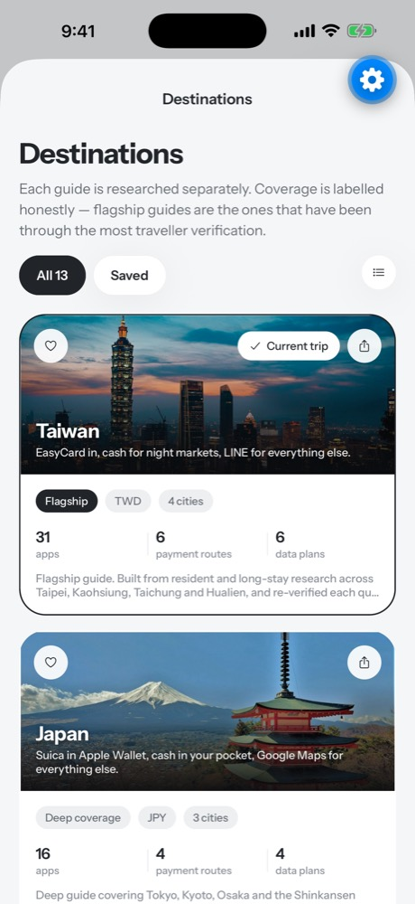
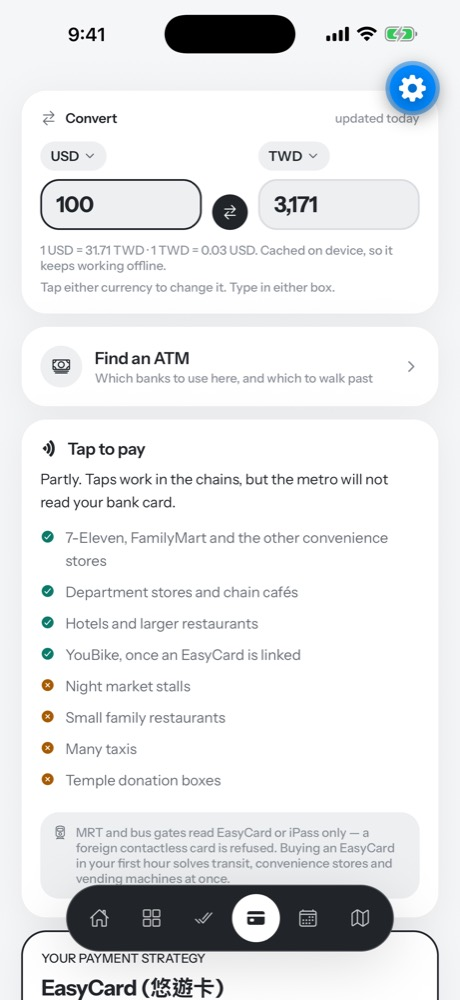
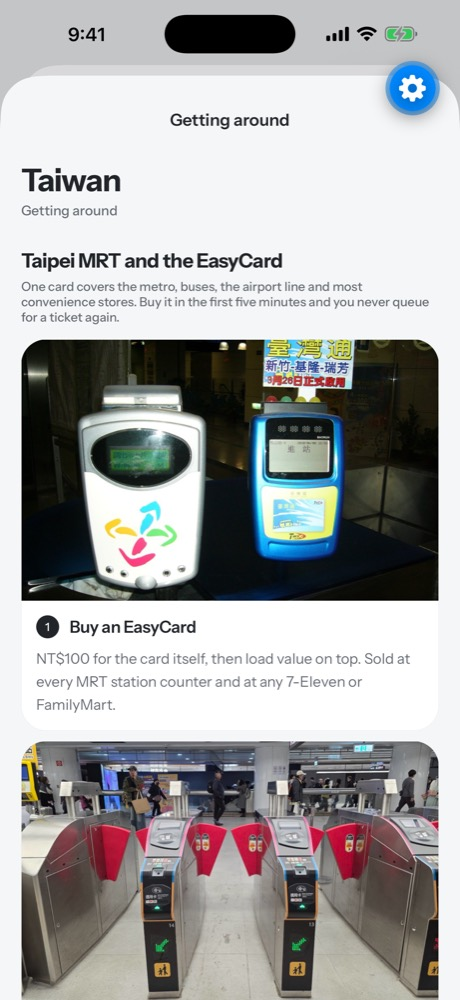
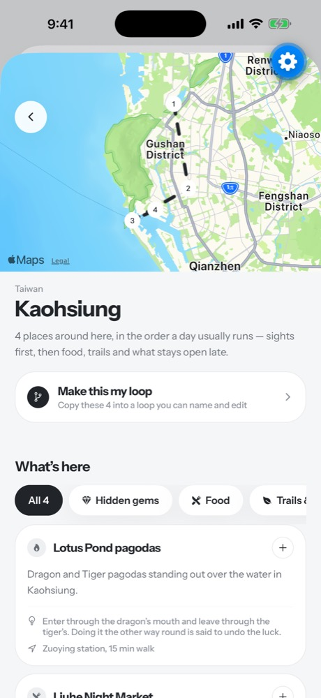
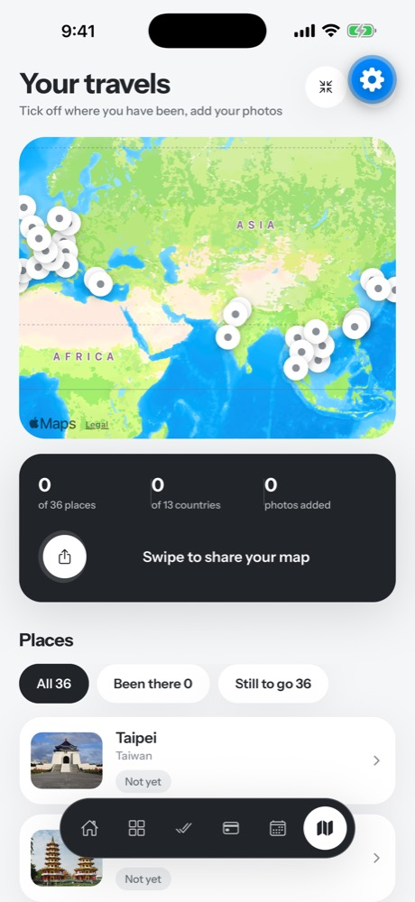

Be a pro before you land
The apps locals actually use, how to pay, how to get around, and your first hour after landing. Twelve countries, all offline.
Taiwan is free forever. No account needed.





🇯🇵 JapanSuica in Apple Wallet
✓ Tap to pay7-Eleven, FamilyMart, chains
🚇 EasyCardBuy it in the first five minutes
✨ Day plannedBuilt around where you are staying
🏳️ New flagPassport stamp collected
Prepare · pick a country
Know the country before you fly
Twelve guides, each researched separately and labelled honestly for how deep it goes.
Prepare · money
Know how to pay
Cards, cash, and where contactless quietly fails, with the right eSIM and what it costs.
Explore · transport
Get around from minute one
Tickets, passes and what the signage looks like, before you reach the gate.
Explore · routes
Walk the city like a local
Day-by-day routes and loops you can follow or edit. Works with zero signal.
Remember · your travels
Keep every place you have been
Tick off cities, add your photos, collect a flag for every country and share your map.